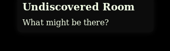

You start with 3 lives, you can see them in the upper right corner of the screen. If the guard sees you, you will lose one.

If you hover over an object with your mouse, you can see a description text in the top middle.

In the upper left corner of the screen you can see a turn indicator, which shows you how many actions you or the guard can take until the other one can start its turn. Keep in mind that some actions take longer than others.
If an object (like the right room in this case) is glowing yellow, you can interact with it by clicking on it.
If you enter a room with lasers, the guard will be alerted and will move to your position. To prevent this from happening, you can click on the laser rays to enter the room cautiously.
In the upper right corner of this room you can see a safe. Crack it via clicking on the lock and you will find some treasures.

If you click on the lock on the safe door, a minigame will appear. Here you can rotate the lock by clicking the ±1 and ±5 buttons. If your on the right spot the corresponding red lamp will change to yellow. If you turn in the other direction now, the current lock part will lock and the lamp will change to green. If you turn it over the right point, the lock will reset its state and you have to start again. If all lock part are set up right, click the open button and can open the safe.